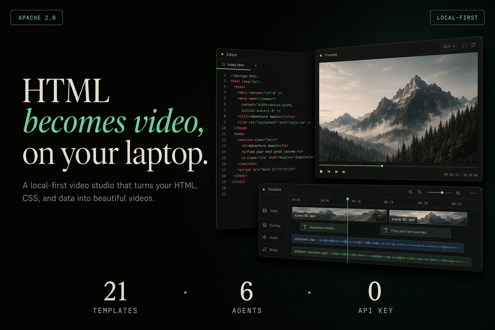

Open Source · Coding Agent · Video Generation
HTML → Video元层框架
用嘴剪视频的时代来了：给编程 agent 一个链接，agent 生成多帧动画视频并渲染为 MP4，全程本地运行，无按次收费。
Apache-2.0
6 种 Agent
21 种模板
本地 MP4
无按次计费
多引擎适配

一句话描述：html-video 是「视频生成的 agent 元层」——它把编程 agent（Open Design · Claude Code · Cursor · Codex · Hermes · Anthropic API）作为大脑，上层是 21 种精心挑选的视频模板，下层是可插拔的渲染引擎（如 Hyperframes → 本地 Chromium + ffmpeg → 真实 MP4）。
👉 输入可以是文字描述、公众号链接或 GitHub 仓库地址，输出是本地 MP4 文件，全程本地运行，无云渲染费用，无供应商锁定。
每个模板都是真实可渲染的单文件 HTML 动画，以下为 21 种模板中的 6 种示例。
frame-data-chart-nyt
data-viz · 编辑图表
NYT 风格动画折线图 — 含标题、标注数据点、来源行，适合「数字上涨/下跌」类报道。
frame-glitch-title
title-card · 标题卡
色差故障艺术（Chromatic Aberration）+ 扫描线标题卡，适合开场、「系统上线」氛围。
frame-liquid-bg-hero
hero · 极客首页
极光流Gradient 英雄图 — 中心标题，适合产品发布、大事件宣布。
frame-light-leak-cinema
cinematic · 电影感
暖调胶片颗粒 + 光漏电影帧，适合氛围片、品牌故事、「平静的一年」叙事。
vfx-text-cursor
VFX · 代码特效
打字机文字效果 + 闪烁终端光标，适合代码演示、CLI 操作类视频。
frame-logo-outro
outro · 结尾Logo
简洁 Logo 动画结尾卡，适合收尾、品牌印记，适用于任何视频结尾。
➕ 还有 15 种模板：多场景产品宣传、动态字体、瑞士网格数据卡、决策树讲解、Kinetic Type 动画、暖调编辑风格等。
①
Source Fetch · 内容获取
输入：文字描述 / 公众号文章链接 / GitHub 仓库地址 → 服务端抓取并平整化为 Markdown
↓
公众号文章（微信）、普通网页、GitHub Repo 均可；无需登录，登录免费页也行。
②
Agent Loop · Agent 生成循环
编程 agent 读取素材 + 模板风格说明 → 输出内容图（故事板）+ 每帧 HTML 块
↓
内容图（Content Graph）= 多帧 IR：节点（entity / data / text）+ 边（sequence / dependency / contrast）
③
Content Graph · 内容图
多帧故事板 IR — 节点 + 边拓扑排序 → 确定帧顺序 & 时序
↓
④
Per-Frame HTML · 每帧 HTML
每个节点生成自包含的动画 HTML 文件（单帧快速路径跳过内容图）
↓
⑤
Hyperframes Render · 渲染引擎
无头 Chromium 逐帧加载 → 录制动画 → WebM 每帧 → ffmpeg 编码（libx264）
↓
⑥
Export · 导出
ffmpeg 拼接 WebM → MP4；可选 MiniMax 背景音乐 + 配音混合
全程本地运行，无需云端，无按次计费。引擎可换（后续 Remotion / Motion Canvas / Revideo 共用同一接口）。
03
Supported Agents · 支持的编程 Agent
| Agent |
检测方式 |
调用方式 |
| Open Design (Vela) |
推荐 vela / Open Design 应用内置 |
ACP over stdio — 一次登录，切换任意模型 |
| Claude Code |
常用 claude |
claude --print，prompt 经 stdin 传入 |
| Cursor Agent |
常用 cursor-agent |
cursor-agent --print |
| Codex CLI |
可选 codex |
codex exec，prompt 经 stdin 传入 |
| Hermes |
可选 hermes |
Hermes ACP CLI |
| Anthropic Messages API |
BYOK 自带 API Key |
直连 Messages API — 无需安装 CLI |
04
Engine Comparison · 渲染引擎对比
| Engine |
Paradigm |
Tradeoff |
html-video 状态 |
| Hyperframes |
HTML + CSS + GSAP，agent-skill 驱动 |
单渲染范式 |
✅ 已上线 默认引擎，本地 Chromium + ffmpeg 渲染 MP4 |
| Remotion |
React 组件 |
4 人以上付费 |
🗺️ 规划中 适配器接口已设计，尚未实现 |
| Motion Canvas |
TypeScript 生成器 on Canvas |
最适合讲解/代码优先 |
🗺️ 规划中 同上 |
| Manim |
数学 / 3D 优先 |
小众 |
🔬 研究中 调研阶段 |
💡 html-video 是所有引擎之上的元层（Meta-Layer）：适配器接口 render(input, ctx) 统一化渲染入口，换引擎不影响故事板和 agent 循环。
- packages/core/Project / Asset / ContentGraph 类型、注册表、编排器、MiniMax 提供者 + ffmpeg 混音
- packages/content-graph/多帧故事板 IR（节点 + 边、拓扑排序）
- packages/runtime/Agent 运行时 — 检测 / 生成 / 流式输出（Open Design/Vela · Claude · Cursor · Codex · Hermes · Anthropic API）
- packages/adapter-hyperframes/Hyperframes 引擎适配器 — 通过 Chromium + ffmpeg 真正渲染 MP4
- packages/cli/
html-video 命令 + Studio HTTP 服务端 + 源站抓取
- packages/project-studio/浏览器 Studio UI（对话、模板库、Agent 切换、帧编辑、配乐、导出）
- templates/21 种精心挑选、许可证干净的视频模板
- research/RFC 文档（引擎适配器 / 模板元数据 / Agent Skill / 内容图）
$ pnpm install
$ pnpm -r build
$ node packages/cli/dist/bin.js studio
→ 打开 http://127.0.0.1:3071，选择模板或粘贴链接，与 agent 对话编辑帧文本，导出 MP4。
$ node packages/cli/dist/bin.js doctor
$ node packages/cli/dist/bin.js search-templates --intent "github stars race" --top 3
| Feature | Status |
|---|
| 引擎适配器接口规范 — 统一 render(input, ctx) | ✅ Done |
| 模板元数据格式 — license-first, agent-readable | ✅ Done |
| 多帧故事板工作流（Content Graph） | ✅ Done |
| Studio：实时模板库、Agent 切换、帧文本编辑 | ✅ Done |
| 来源素材：文章 / GitHub → 视频 | ✅ Done |
| AI 配乐（MiniMax 音乐 + 配音），导出时混合 | ✅ Done |
| 本地 MP4 渲染 — Hyperframes 引擎 | ✅ Done |
| Remotion / Motion Canvas / Revideo 适配器 | 🗺️ Planned |
| Agent Skill 包 + 模板市场 | 🗺️ Planned |